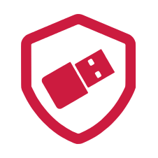
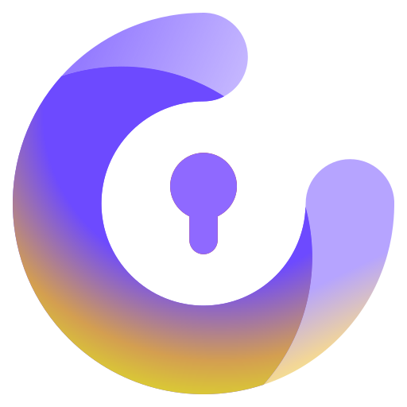

~/tools/2fa
2FA & Hardware Keys
last updated 2026-08-02 · 5 recommendations · what changed
A second factor means a stolen password isn't enough. The jump from
no 2FA to any 2FA is enormous; the jump from app codes to a
hardware key kills phishing almost entirely. Do it for your email and
password manager first; they unlock
everything else.
before you pick
Not all second factors are equal. SMS codes can be intercepted via SIM-swap;
app codes (TOTP) can be phished in real time; hardware keys verify the site's
identity and can't be phished. Use the best method each account
offers, and treat SMS as a last resort, not an option you add alongside
better ones.
what actually matters
phishing resistance
FIDO2/passkey hardware checks it's talking to the real site. TOTP codes don't: a convincing fake page gets your code.
backup & recovery
The most common 2FA disaster is self-inflicted lockout. Whatever you pick needs a recovery plan from day one.
open source / open spec
FIDO2 and TOTP are open standards. Open firmware (or at least open apps) means the implementation can be checked too.
cross-platform reach
Your factor has to work on your phone, your laptop, and that one ancient government portal. USB-C plus NFC covers the most ground.
recommendations
YubiKey 5 Series
the default key
🇸🇪 swedenfido2totpclosed sourcepaid
The YubiKey is the reference hardware key: tap to log in, immune to phishing,
and supported by practically every service that supports anything. One key
(USB-A or USB-C, with NFC) does FIDO2/passkeys, TOTP storage, PGP, and
smartcard duty. Buy
two: one on your keychain, one in a drawer, and register both
everywhere, every time.
good
- Widest service compatibility of any key, by far
- Phishing-proof FIDO2/WebAuthn plus TOTP/PGP/PIV in one device
- Indestructible in practice: survives keychains, washing machines, years
- NFC works with phones; no battery, nothing to charge
mind the
- Closed-source firmware: you're trusting Yubico
- ~€55 each, and you really do need two
- Firmware isn't updatable: a flaw means new hardware

Nitrokey 3
the open-source key
🇩🇪 germanyfido2totpopen sourcepaid
The Nitrokey 3 does the same job as the YubiKey (USB-A or USB-C, with NFC)
with fully open-source, updatable firmware: you can audit what runs on the key,
and flaws get patched instead of forcing you to buy a new key. It's made in
Germany with a transparent supply chain. The ecosystem is a little younger,
so check your critical services against Nitrokey's compatibility notes
before going all-in.
good
- Open firmware on open hardware: verifiable end to end
- Updatable: security fixes don't require new hardware
- EU-based company, privacy-first by charter
mind the
- Some advanced features landed later than Yubico's equivalents
- Less tested against obscure enterprise systems
- Slightly pricier per key
Aegis Authenticator
the android totp pick
android onlytotpopen sourcelocal-firstfree
Aegis is the best TOTP app on Android: it's open source, the vault is
encrypted and locks behind biometrics, and, the part that matters, it does
proper encrypted exports, so a lost phone isn't a lost
identity. Set the vault to auto-back up to a synced folder and recovery
becomes a non-event.
good
- Encrypted, exportable vault: the recovery story done right
- Open source, no account, no cloud dependency
- Imports from basically every other authenticator
mind the
- Android only: iPhone users want Tofu or Ente Auth instead
- Backups are your responsibility, automate them once, properly
- TOTP is still phishable; upgrade critical accounts to a key

Ente Auth
the cross-platform totp pick
totpopen sourcee2eeauditedfree
Ente Auth gives you TOTP codes that follow you across Android, iOS, and
desktop with end-to-end encrypted sync: the convenience of
Authy without the closed source or the phone-number account. It's from the
team behind Ente Photos; the app is free and the sync is optional if you'd
rather stay offline.
good
- E2EE multi-device sync: lost phone, zero drama
- Open source with published audits
- Works offline; sync account is optional
mind the
- Sync means trusting their infrastructure exists tomorrow (export regularly)
- Younger project than Aegis
- Same TOTP phishing ceiling as every code app

Proton Auth
the proton-ecosystem pick
all platformstotpopen sourcee2eefree
Proton Auth is Proton's own TOTP authenticator, and it does the same job
as Ente Auth: open source with end-to-end encrypted sync
across devices, but it lives inside the Proton account you may already
have for Mail, Pass, or VPN. It's the natural default if you're already
on Proton and would rather not add another vendor for one more app.
good
- E2EE sync across devices, same model as Ente Auth
- Open source
- Shares login and billing with the rest of the Proton suite
mind the
- Younger than Aegis or Ente Auth: smaller track record so far
- Biggest advantage is ecosystem convenience, not a feature edge over Ente Auth
- Same TOTP phishing ceiling as every code app
at a glance
"phishing-proof" = the factor verifies the site's identity, not just yours.
worth knowing
A single key isn't enough — register two, or you risk a lockout.
A single hardware key is a single point of lockout. Register the backup key at
the same time as the primary, every account, no exceptions; retrofitting later
never happens.
Store recovery codes like they're passwords, because they are.
Every service hands you one-time recovery codes when you enable 2FA; they go in
your password manager, not a screenshot
folder.
Passkeys are this, minus the dongle. A passkey is FIDO2
credentials synced by your password manager or platform. Where offered, they're
a real upgrade over passwords-plus-TOTP, and they coexist fine with hardware
keys.
Remove SMS where you can. Adding a stronger factor often leaves
SMS active as a fallback, which means your security is still your phone number.
Check each account's 2FA settings and delete the SMS option once a better one
works.